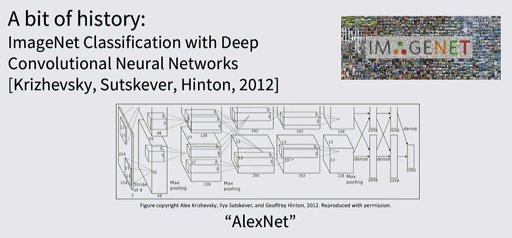
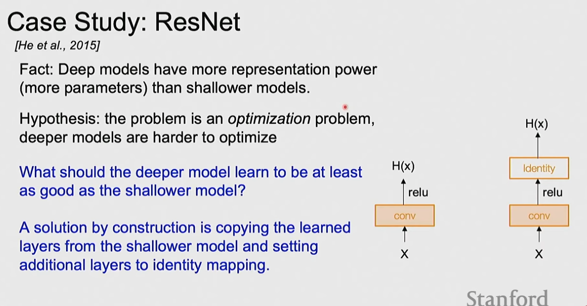
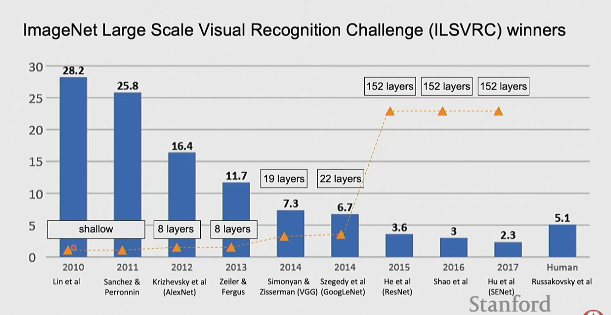

CNNs are the dominant architecture for visual processing. Instead of looking at the entire image at once, CNNs use small filters that slide across the image, detecting local patterns with vastly fewer parameters than fully-connected layers.
A fully-connected layer on an image flattens the entire image (e.g., 32×32×3 = 3072 inputs), connecting every pixel to every neuron — a huge number of parameters that ignores spatial structure.
A convolutional layer uses small filters (e.g., 3×3 or 5×5) that slide across the image. Each filter detects one type of local feature (edge, corner, texture). Parameters are shared across all positions, producing vastly fewer parameters. The output is a feature map — one channel per filter.
"Convolutional" comes from the mathematical convolution operation — folding two functions together.

A typical CNN follows the pattern: Input → [Conv → ReLU]* → Pool → [FC]* → Softmax
Input: 3 × 32 × 32
Filters: 6 filters, each 3 × 5 × 5
Output: 6 × 28 × 28 (one activation map per filter, stacked)The filter's depth must match the input's depth (3 channels). The output is a 6 × 28 × 28 volume — 6 activation maps, each 28 × 28.
Spatial dimension formula:
(W − K + 2P) / S + 1Example computation: input 3 × 32 × 32, 10 filters 5 × 5, stride 1, pad 2: output size 10 × 32 × 32, parameters = 10 × (3 × 5 × 5 + 1) = 760, multiply-add ops ≈ 768K.
Pooling reduces spatial dimensions. Standard max pooling: input C × H × W, output C × H' × W' where H' = (H − K) / S + 1. No learnable parameters. Common setting: K=2, S=2 → 2× spatial downsampling.
After the convolutional body, a fully connected layer flattens the feature volume (e.g., 32×32×3 → 3072×1) and applies a weight matrix W. Each row of W represents one class template.
VGGNet uses stacked 3×3 conv layers exclusively:
VGG16 and VGG19 are the most common variants (16 or 19 weight layers). Both significantly outperform AlexNet on ImageNet.
Normalizes activations within a mini-batch to mean 0, variance 1, then learns scale (γ) and shift (β). Stabilizes training, acts as a regularizer, and enables training of much deeper networks. Applied after the linear/conv layer, before the activation.
LayerNorm normalizes across the feature dimension (not the batch dimension): y = γ(x − μ) / σ + β. Preferred in transformers because it doesn't depend on batch size.
Randomly zeros out neurons during training with probability p (typically 0.5). Forces the network to learn redundant representations and prevents co-adaptation. At inference, all neurons are active but outputs are scaled.
Training images are randomly transformed: horizontal flips, random crops, color jitter, random scaling. At test time, multiple augmented views are averaged (TTA).
Without activation functions, a stack of convolutional layers collapses to a single linear operation. Activations add non-linearity:
| Activation | Formula | Notes |
|---|---|---|
| ReLU | max(0, x) | Standard for CNNs; fast, sparse |
| Leaky ReLU | max(0.1x, x) | Allows small negative values; fixes dying neuron problem |
| ELU | exponential negative region | Smooth negative region |
| GeLU | x · Φ(x) | Main activation in transformers today |
| Sigmoid | 1/(1+e⁻ˣ) | Squashes to [0,1]; vanishing gradient at saturation |
| Tanh | (eˣ−e⁻ˣ)/(eˣ+e⁻ˣ) | Squashes to [-1,1]; used in RNNs |
| SiLU / Swish | x · σ(x) | Smooth, gated variant |
Improper initialization causes vanishing or exploding activations. Solutions:
Deep networks suffer from degradation — more layers can lead to worse training performance. ResNet solves this with skip connections:
output = F(x) + xEach block only needs to learn what changed (the residual), not everything from scratch. Gradients flow directly back through skip connections eliminating the vanishing gradient problem. This enables training of networks with hundreds of layers — ResNet-152 surpassed human-level performance on ImageNet in 2015.
Pretrained CNNs (ResNet, VGG, EfficientNet) trained on ImageNet are reused for new tasks by freezing earlier layers (general features: edges, textures) and fine-tuning later layers on new task-specific data. Dramatically reduces training data and compute needed.

The ImageNet Large Scale Visual Recognition Challenge drove the deep learning revolution:
| Year | Model | Team | Top-5 Error |
|---|---|---|---|
| 2010 | — | Lin et al. | 28.2% |
| 2011 | — | Sanchez & Perronnin | 25.8% |
| 2012 | AlexNet | Krizhevsky, Sutskever, Hinton | 16.4% ← breakthrough |
| 2013 | ZF Net | Zeiler & Fergus | 11.7% |
| 2014 | VGG | Simonyan & Zisserman | 7.3% |
| 2014 | GoogLeNet | Szegedy et al. | 6.7% |
| 2015 | ResNet | He et al. | 3.6% |
| 2016 | — | Shao et al. | 3.0% |
| 2017 | SENet | Hu et al. | 2.3% |
| — | Human | Russakovsky et al. | 5.1% |
AlexNet (8 layers) in 2012 cut the error rate nearly in half — the event that launched the modern deep learning era. ResNet (152 layers) surpassed human-level performance in 2015.
